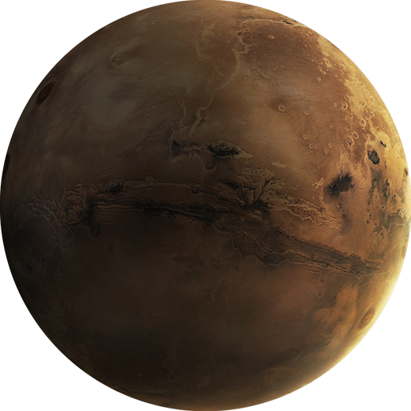

PLANETA MARTE
Marte é o quarto planeta a partir do Sol – um mundo empoeirado, frio e desértico com uma atmosfera muito
fina. Marte também é um planeta dinâmico com estações, calotas polares, cânions, vulcões extintos e
evidências de que era ainda mais ativo no passado. Esse é um dos corpos mais explorados do nosso sistema solar, e
é o único planeta onde a Nasa envia rovers para vagar pela paisagem alienígena.
Distancia do sol: 228 milhões de km (142 milhões de milhas).
Diâmetro: 4.220 milhas.
Temperaturas: Média -81 graus F.